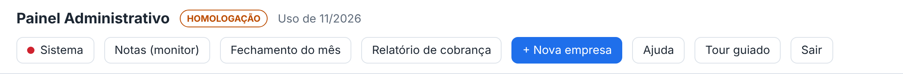
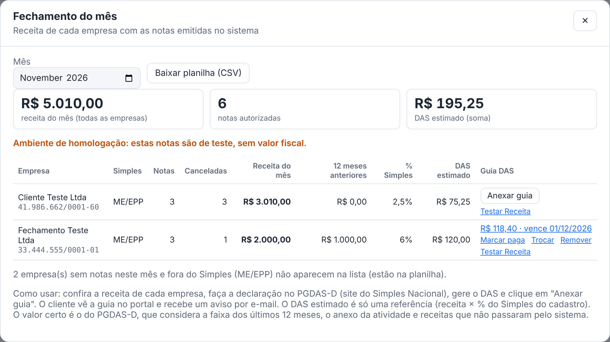
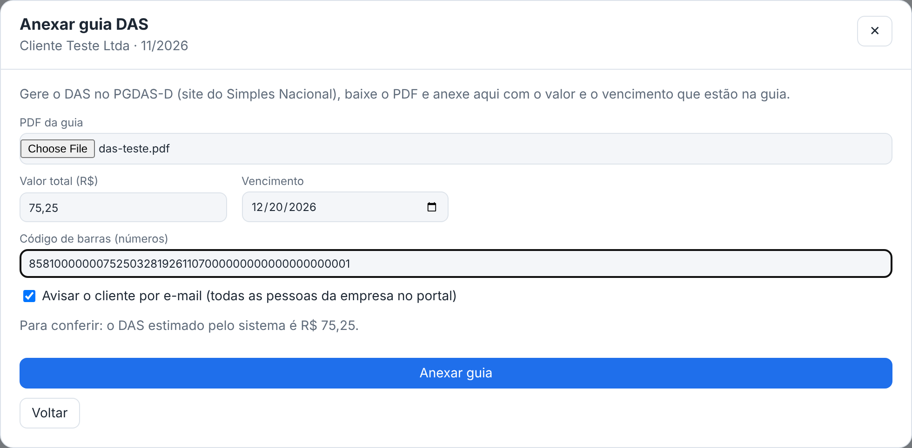
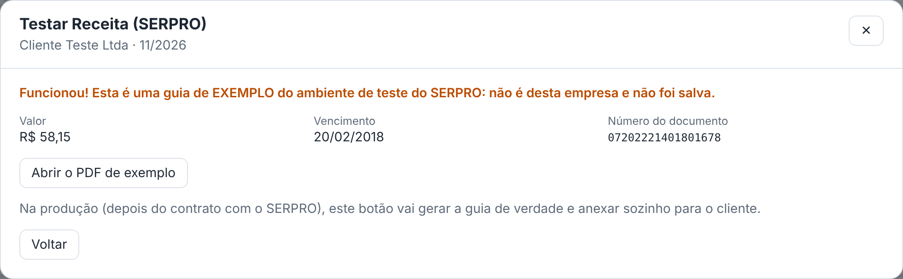

Fechamento do mês e guia DAS do Simples
No fim do mês, veja quanto cada empresa faturou, faça a declaração do Simples e entregue a guia DAS para o cliente pagar pelo portal.
lightbulb Antes de começar
- A receita vem das notas autorizadas no sistema: NFS-e pela data de competência e NF-e pela data de autorização. Notas canceladas não entram.
- A declaração (PGDAS-D) e a guia continuam sendo feitas no site do Simples Nacional. O sistema mostra os números e entrega a guia ao cliente.
- Na primeira vez, clique em Atualizar banco (em Sistema) para criar as tabelas das guias.
-
Abra o Fechamento do mês
No topo do painel, clique em Fechamento do mês.

-
Confira a receita de cada empresa
Escolha o mês. Os quadros do topo somam a receita, as notas e o DAS estimado de todas as empresas. Na lista, cada empresa mostra:
- Receita do mês: soma das notas autorizadas no mês (NFS-e + NF-e).
- 12 meses anteriores: receita dos 12 meses antes deste, que define a faixa do Simples.
- % Simples e DAS estimado: receita × percentual do cadastro da empresa. É só uma referência.
- Guia DAS: anexar, ver, marcar como paga, trocar ou remover a guia.
Para levar ao Excel, clique em Baixar planilha (CSV). A planilha traz também as empresas sem notas no mês.

-
Faça a declaração e gere o DAS
No site do Simples Nacional (PGDAS-D), declare a receita da empresa e gere o DAS. Baixe o PDF da guia.
O valor certo é o do PGDAS-D: ele considera a faixa dos últimos 12 meses, o anexo de cada atividade, o fator R e receitas que não passaram pelo sistema.
-
Anexe a guia
Volte ao Fechamento e clique em Anexar guia na linha da empresa. Escolha o PDF e preencha o valor total, o vencimento (já vem o dia 20 do mês seguinte) e o código de barras (os 48 números da guia).
Deixe marcado Avisar o cliente por e-mail para todas as pessoas da empresa no portal receberem o aviso. Clique em Anexar guia.

Pronto: o cliente vê a guia em Guias do Simples, no portal.
-
Acompanhe o pagamento
Na coluna Guia DAS, a guia mostra valor e vencimento (clique para abrir o PDF). Os links abaixo dela:
- Marcar paga: pede a data do pagamento. O cliente também pode marcar no portal, em Já paguei.
- Desfazer pago: volta a guia para a vencer ou vencida.
- Trocar: envia outro PDF (por exemplo, uma guia refeita). A marcação de paga é apagada.
- Remover: o cliente deixa de ver a guia.
O sistema não confere o pagamento na Receita: "paga" quer dizer que alguém marcou.
Gerar o DAS pela Receita (SERPRO) — em teste
Por enquanto só existe o modo teste, gratuito. Ele chama o ambiente de demonstração do SERPRO e mostra sempre a mesma guia de exemplo (de 2018), que não é da empresa e não é salva. Serve para conferir que a ligação com a Receita funciona.
-
Ligue o modo teste
Em Sistema › Configurações do sistema, mude Gerar DAS pela Receita para Teste e salve.
-
Teste numa empresa
No Fechamento do mês aparece o link Testar Receita na coluna Guia DAS. Clique: se a ligação funcionar, aparece Funcionou! com o valor, o vencimento, o número do documento e o botão para abrir o PDF de exemplo.

A guia de verdade, gerada sozinha para cada cliente, depende do contrato com o SERPRO, do certificado e-CNPJ do escritório e da procuração eletrônica de cada cliente.
Se der errado
| O que aconteceu | O que fazer |
|---|---|
| A coluna Guia DAS não aparece. | Falta atualizar o banco: Sistema › Atualizar banco. |
| A empresa não aparece na lista. | A lista mostra quem teve nota no mês ou é ME/EPP. As outras estão na planilha CSV. |
| DAS estimado aparece "–". | Só ME/EPP com % Simples no cadastro tem estimativa. MEI paga valor fixo e não optante não tem DAS. |
| A receita está diferente do PGDAS-D. | O sistema só conhece as notas emitidas por ele. Some as receitas de fora (outros sistemas, vendas sem nota) na declaração. |
| "Código de barras" recusado. | Digite só os 48 números da linha digitável, sem pontos nem espaços. |
| O cliente não recebeu o e-mail. | Veja O e-mail não chegou. A guia fica no portal mesmo sem o e-mail. |
| Testar Receita: "O SERPRO recusou o pedido" ou "quota". | O ambiente de teste do SERPRO limita o número de chamadas. Espere alguns minutos e tente de novo. |
| Testar Receita: "Sem resposta do SERPRO". | O servidor não alcançou a internet do SERPRO. Rode o diagnóstico em Sistema. |